The owner's view of the farm, on a phone. What is being picked right now, how this season compares with every season on record, the weather that drove each of them, a transparent harvest-risk score, the owner's own crop estimate block by block, and what the fruit actually made at market.
AnalysisSeason pace, yield per block and per tree, variety trends, season length and monthly volume, every season side by side.
Estimate and RiskA per-block crop estimate with a pack-out mix, checked against a weather model built from the farm's own record.
Weather and MarketsHourly weather since 2012, and the prices the fruit made by pack type and buyer against a public reference.
Hosted in South Africa at yourfarm.plaashek.co.za. All screens in this document show demonstration data; seasons, weather and figures are invented.
How it fits together
The farm in the owner's pocket
Plaashek Owner reads the harvest that Plaashek Harvest captures and the delivery notes Packhouse makes, and adds what only the owner keeps: the seasons before the apps, the weather record, the crop estimate and the market statements. Nothing is captured twice. It is built phone first, with the same six tabs on a PC.
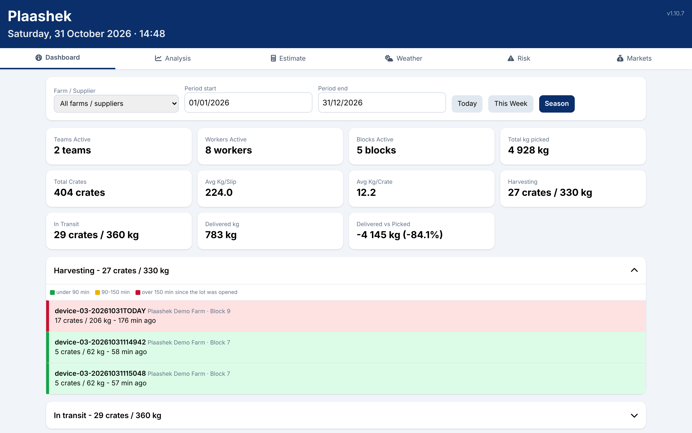
Dashboard: the season's figures from Harvest, including what is still being picked and in transit right now, and the kilograms delivered against picked.
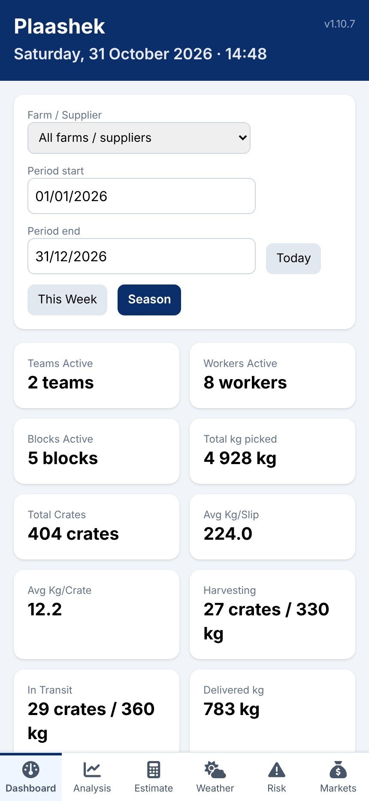
The same dashboard on a phone.
Phone first. Six tabs: Dashboard, Analysis, Estimate, Weather, Risk and Markets. Every chart is drawn on the device and downloads as a PDF; every table as Excel.
Reads, never disturbs. Harvest's and Packhouse's data are opened read only. The Estimate tab is the one screen that writes, into the owner's own database.
Seasons before the apps. Past seasons are imported once from the farm's own spreadsheets, daily per block where the record has it and annual totals before that.
Weather on file. Hourly weather for the farm's position, back to 2012, kept current every day from a weather service and, where the farm has one, its own station.
Optional AI help. With a key on the server: ask about an estimate or the weather, check an estimate before saving, see what changed between two versions, and a short brief each morning. Without a key, everything else works.
Hosted in South Africa at yourfarm.plaashek.co.za, with daily backups.
Analysis
This season against every season
The current season laid over its own history, day by day. Which blocks are ahead or behind their average, which varieties are trending, how long each season ran and what each month contributed.
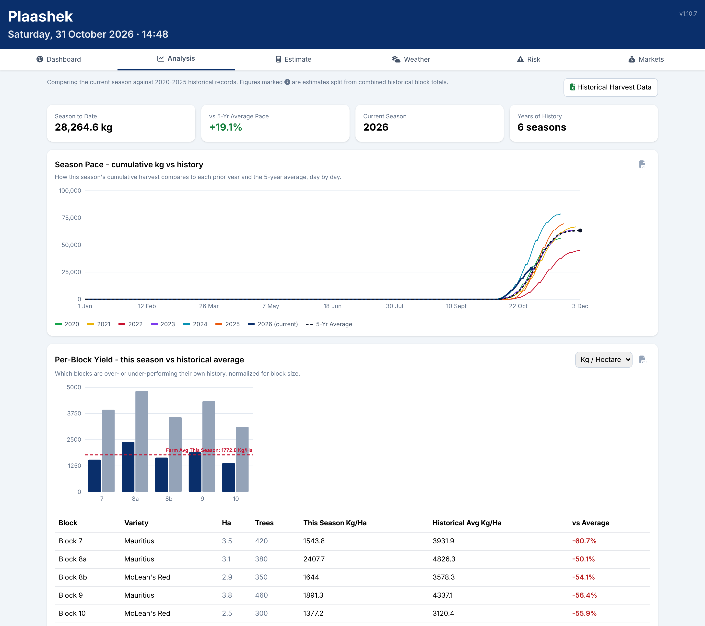
Season to date and pace against the five-year average; cumulative kilograms day by day; this season's yield per hectare against each block's own history.
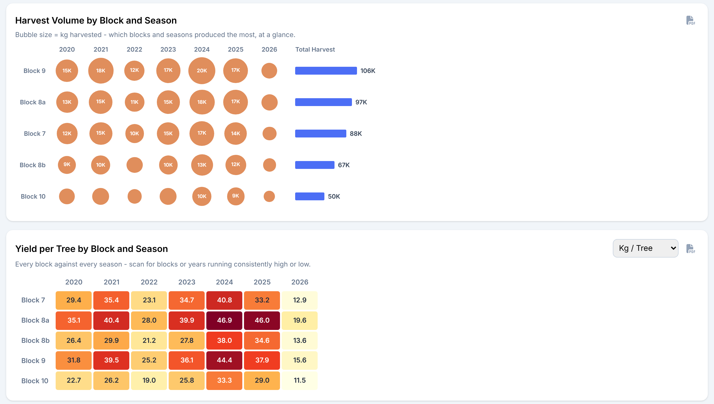
Harvest volume by block and season at a glance, and kilograms per tree for every block in every season as a heat map.
Season pace. Cumulative kilograms against each prior year and the average, so a late or short season shows itself early.
Per block, normalised. Kilograms per hectare and per tree, so a small block and a big one compare fairly.
Variety, length and month. Average yield per variety over time, first pick to last pick per season, and a monthly heat map with each month's share.
The historical workbook. One button downloads the whole record as a spreadsheet, the way the farm used to keep it.
Estimate
The owner's crop estimate, block by block
Every block in the register with its tree count and its history in kilograms per tree. Fill the estimate from last season or a past average, adjust the blocks that look different in the orchard, and save it as a version. As the season runs, the estimate is tracked against what is actually picked.
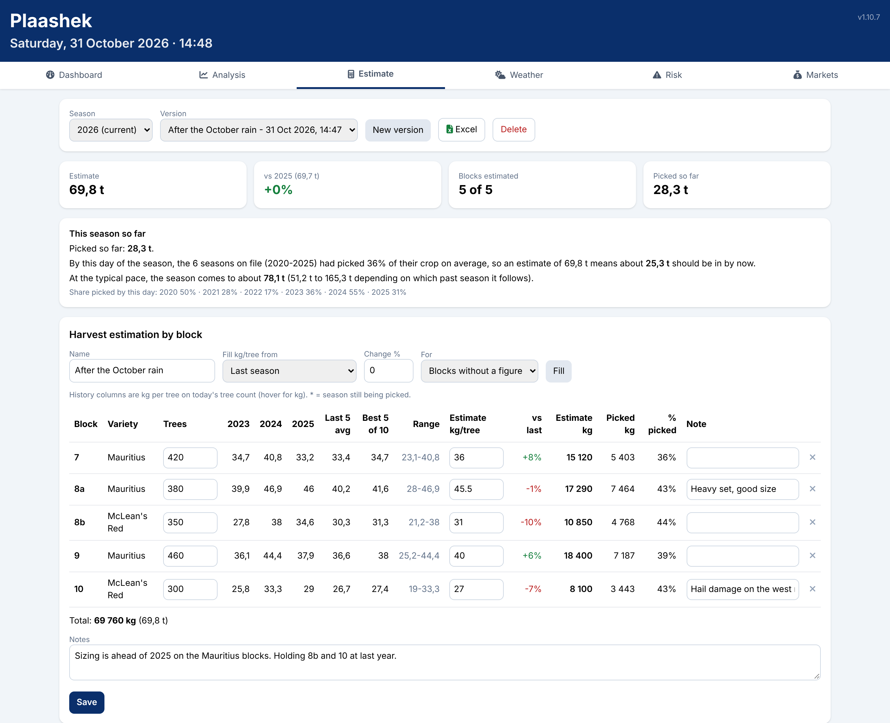
Version picker, totals, "this season so far" against the typical pace by this day, and the estimate table with each block's last three seasons, five-year average, best five of ten and range.
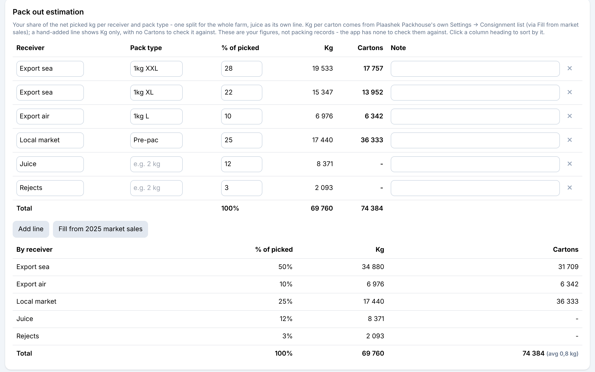
Pack-out estimation: the estimate split by receiver and pack type into kilograms and cartons, filled from last season's market sales in one tap.
Versions, not overwrites. Each save is a version with a name, notes and the date. Compare versions and export any one to Excel.
Progress against the estimate. What share of the crop past seasons had picked by this day, and where this season lands at that pace.
Pack-out mix. Export, local, juice and rejects as percentages, turned into cartons per pack type with the pack house's own carton weights.
Estimate
Cross-checked against the weather
Beside the owner's figure sits the weather model's: unfavourable, expected and favourable kilograms for the season, and the past seasons whose weather so far came closest, with what each of them produced.
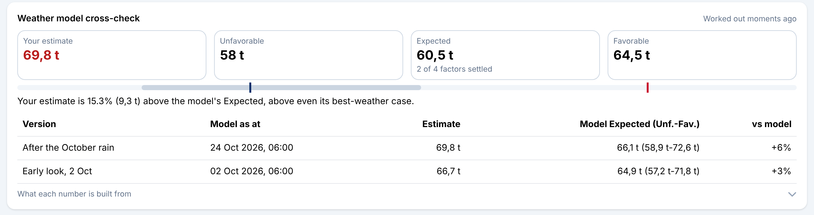
Weather model cross-check: the estimate placed on the model's range, and each version against the model as it stood when that version was saved.
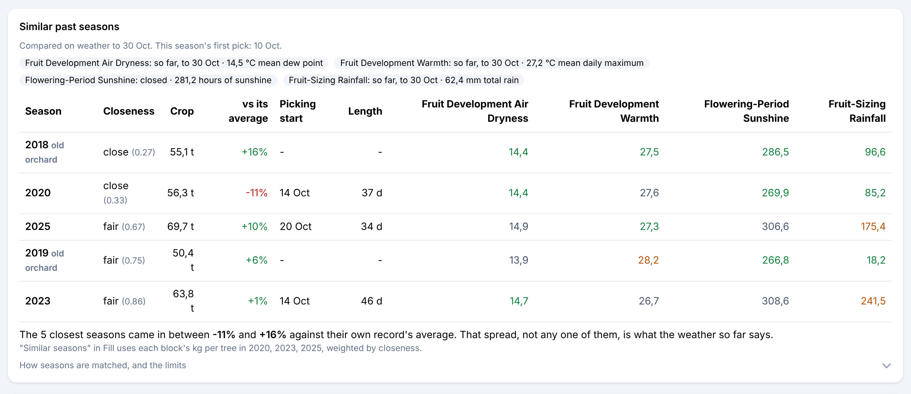
Similar past seasons: ranked by closeness of weather on the four scored factors, each with its crop against its own average, picking start and season length.
A range, not a number. The model never pretends to know the crop to a kilogram. It shows a spread, and where the owner's estimate sits in it.
Snapshotted with each version, so an estimate can be judged against what the weather said at the time, not only afterwards.
Honest about its limits. Weather explains part of a season's swing. The similar-seasons spread is shown as the uncertainty, not hidden.
Weather
The weather record
Hourly weather for the farm's own position, one line per season ticked, any two measurements against left and right axes. Temperature, humidity, dew point, rainfall, wind, soil temperature, UV and sunshine.
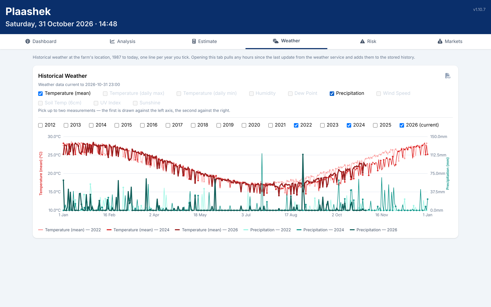
Three seasons of mean temperature and daily rainfall overlaid: the dry 2022 spring, the wet 2024 one and this season.
Kept current by itself. Opening the tab pulls the hours since the last update and adds them to the stored record.
The farm's station first. Where the farm has an on-site weather station its readings are used; the weather service fills in what the station does not measure.
Download any view as a PDF for the file.
Risk
A transparent harvest-risk score
A score from 0 to 100 of how risky the season's weather looks for a poor harvest, built from the four weather factors that best explained this farm's own harvest swings across its record. Not a generic forecast: each factor shows its window, its reading and why it matters.
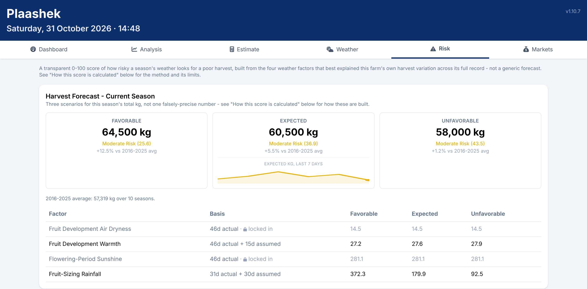
Harvest Forecast: favourable, expected and unfavourable kilograms for the season, with each factor's basis (days actual, forecast or assumed) and the expected figure's trend over the last week.
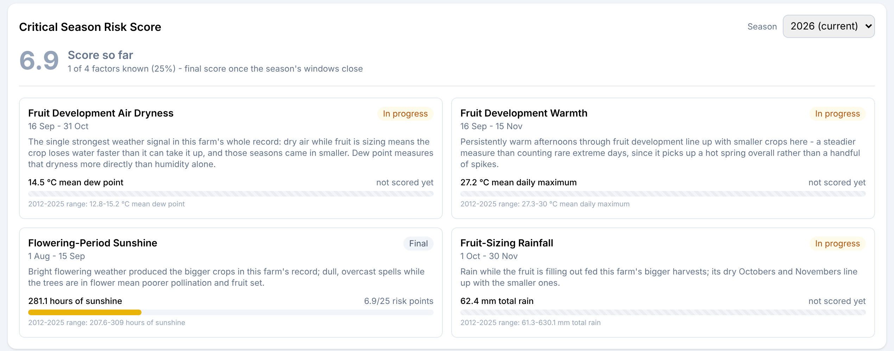
The score so far, and a card per factor: window, reading, plain-language reason and where it sits in the farm's own range.
Risk
Back-tested against every season
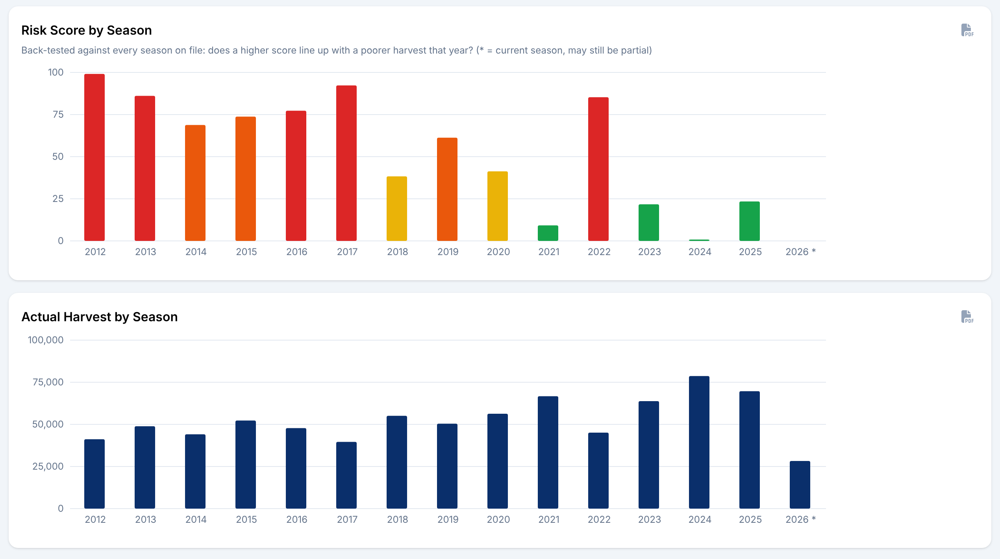
Risk score by season beside the actual harvest by season: a higher score should line up with a poorer crop, and the owner can see for themselves whether it does.
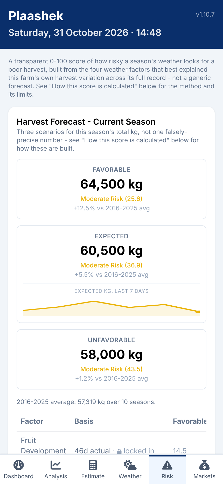
The Risk tab on a phone.
Four factors, fixed windows. Air dryness and warmth while fruit develops, sunshine at flowering, rain while fruit sizes. The same calendar windows every year.
Open windows are projected. A factor whose window has not closed blends actual days, the weather forecast and the farm's historical scenarios, and says how many days of each.
Method in the open. "How this score is calculated" explains the study behind the factors and its limits, in the app itself.
Markets
What the fruit actually made
The owner's market statements, by pack type, buyer and day, laid over past seasons and read against a free published whole-market reference price.
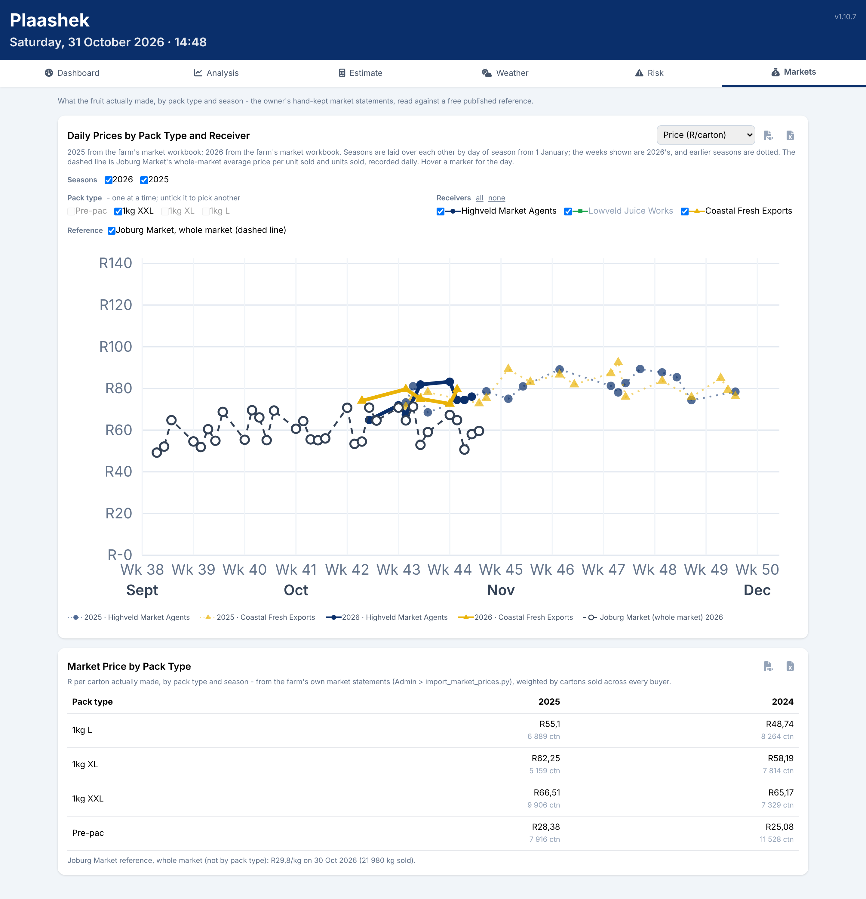
Daily rand per carton by receiver for one pack type, this season solid and last season dotted, with the whole-market reference as a dashed line; below it, each pack type's season price weighted by cartons sold.
Season over season. Seasons are laid over each other by week, so this year's price curve sits on last year's.
Reference price recorded daily, because the public page only ever shows one day.
Feeds the estimate. Last season's cartons per buyer and pack type fill the pack-out mix on the Estimate tab.
Ask AI (optional)
With an AI key on the server: ask about this estimate or this weather in plain language, check an estimate block by block before saving, see what changed between two versions, a short season brief each morning, and ask the farm's notebook (Plaashek Notes). Figures are gathered first and the model is called after; nothing waits on it.
Exports
Every chart as PDF, every table and the estimate as Excel, and the whole historical record as one workbook.
Hosting and data
Your farm lives at yourfarm.plaashek.co.za on a South African hosting service, encrypted in transit and at rest, backed up daily, never shared between farms.
Plaashek Owner is one module of the Plaashek suite. It reads Plaashek Harvest and Packhouse; Harvest's planner reads the owner's latest estimate back.